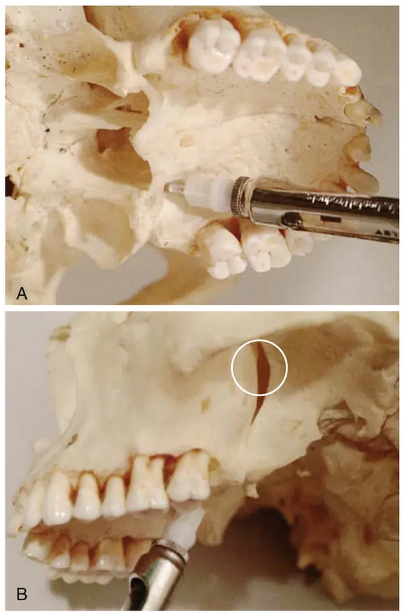

نسخه استخراجشده؛ ترجمه یا تأیید علمی انجام نشده است. وضعیت: captured
بیماری با تورم دردناک باکال مولر اول و پرمولرهای بالای چپ آمده و چند دندان باید کشیده شود. بافت روی محل بلاک آلوئولار فوقانی خلفی (PSA) و اینفیلتراسیون ملتهب است ولی کام خلفی سالم. سوزن را از کجا وارد میکنی؟

از کانال پالاتین بزرگ: سوزن از سوراخ پالاتین بزرگ وارد کانال میشود و تا حفرهی پتریگوپالاتین میرود. آسپیراسیون مثبت در این راه کمتر از ۱٪ است و هماتوم کمتر از راه توبروزیته.
سوزن را خیلی آرام تا عمق ۳۰ میلیمتر در کانال جلو ببر. در ۵ تا ۱۵٪ کانالها مانع استخوانی هست.
در دو صفحه آسپیره کن، ۱٫۸ میلیلیتر را در دستکم ۱ دقیقه بریز و ۳ تا ۵ دقیقه صبر کن. نشانهی موفقیت: فشاری پشت فک بالا که زود میرود، سپس گزگز و بیحسی پلک پایین، کنار بینی و لب بالا، و بیحسی دندانها و بافت باکال و کام همان طرف. بیحسی ناقص اغلب از کمفرورفتن سوزن است: تا عمق درست دوباره وارد شو و تزریق کن.
فرورفتن بیش از حد، بهویژه در جمجمهی کوچک، سوزن را به اربیت میرساند: تورم دور چشم و پروپتوز، دوبینی با بلاک عصب ابدوسنس (زوج ششم)، میدریاز و بیحسی قرنیه. اگر سوزن به داخل منحرف شود، دیوارهی نازک داخلی حفره سوراخ میشود و سوزن به حفرهی بینی میرسد: هوا در کارپول، و بیمار میگوید محلول به گلویش میریزد.